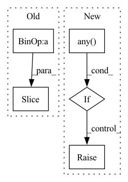

Pattern ID :2596
Before Change
def __add__(self, other):
if isinstance(other, AP_Image):
base = other.origin - self.origin
end = base + other.data.shape
return AP_Image(self.data[base[0] :end[0],base[1]:end[1]] + other.data, pixelscale = self.pixelscale, zeropoint = self.zeropoint, rotation = self.rotation, note = self.note, origin = other.origin)
else:
return AP_Image(self.data + other, pixelscale = self.pixelscale, zeropoint = self.zeropoint, rotation = self.rotation, note = self.note, origin = self.origin)
After Change
if isinstance(other, AP_Image):
if self.pixelscale != other.pixelscale:
raise IndexError("Cannot add images with different pixelscale!")
if np.any( self.origin + self.data.shape < other.origin) or np.any(other.origin + other.data.shape < self.origin):
raise IndexError("images have no overlap, cannot add!")
return AP_Image(self.data[other.window.get_indices(self)] + other.data[self.window.get_indices(other)],
pixelscale = self.pixelscale, zeropoint = self.zeropoint, rotation = self.rotation, note = self.note, origin = (max(self.origin[0], other.origin[0]), max(self.origin[1], other.origin[1])))
else:In pattern: SUPERPATTERN
Frequency: 4
Non-data size: 5
Instances Fragment ID: 10699987
Project Name: connorstoneastro/autoprof
Commit Name: d1668a4d784c875f8a4011c0b1623116a2027274
Time: 2022-06-01
Author: connorstone628@gmail.com
File Name: autoprof/image/image_object.py
M Class Name: AP_Image
N Class Name: AP_Image
M Method Name: __add__(2)
N Method Name: __add__(2)
M Parent Class: object
N Parent Class: object
M File Name: autoprof/image/image_object.py
N File Name: autoprof/image/image_object.py
M Start Line: 67
M End Line: 69
N Start Line: 75
N End Line: 79
Before Change
else:
binary_pairs = list(zip(feature_pos[:-1], feature_pos[1:]))[0::2]
for pair in binary_pairs:
argmax = torch.argmax(x_enc[:, pair[0] : pair[1] + 1])
argmin = 1 - argmax
x_enc[:, pair[0] + argmax] = 1After Change
x_enc[:, pair[0]] = (x_enc[:, pair[0]] >= x_enc[:, pair[1]]).float()
x_enc[:, pair[1]] = (x_enc[:, pair[0]] < x_enc[:, pair[1]]).float()
if (x_enc[:, pair[0]] == x_enc[:, pair[1]]).any() :
raise ValueError(
"Reconstructing encoded features lead to an error. Feature {} and {} have the same value".format(
pair[0], pair[1]
) Fragment ID: 10699991
Project Name: indyfree/carla
Commit Name: fc171398c57a0427d6d09ac97b7d7d5458ce74a9
Time: 2021-06-30
Author: sbielawski@web.de
File Name: carla/recourse_methods/processing/counterfactuals.py
M Class Name: AnonimousClass
N Class Name: AnonimousClass
M Method Name: reconstruct_encoding_constraints(3)
N Method Name: reconstruct_encoding_constraints(3)
M Parent Class:
N Parent Class:
M File Name: carla/recourse_methods/processing/counterfactuals.py
N File Name: carla/recourse_methods/processing/counterfactuals.py
M Start Line: 82
M End Line: 94
N Start Line: 82
N End Line: 100
Before Change
def __sub__(self, other):
if isinstance(other, AP_Image):
base = other.origin - self.origin
end = base + other.data.shape
return AP_Image(self.data[base[0] :end[0],base[1]:end[1]] - other.data, pixelscale = self.pixelscale, zeropoint = self.zeropoint, rotation = self.rotation, note = self.note, origin = other.origin)
else:
return AP_Image(self.data - other, pixelscale = self.pixelscale, zeropoint = self.zeropoint, rotation = self.rotation, note = self.note, origin = self.origin)
After Change
if isinstance(other, AP_Image):
if self.pixelscale != other.pixelscale:
raise IndexError("Cannot subtract images with different pixelscale!")
if np.any(self.origin + self.data.shape < other.origin) or np.any( other.origin + other.data.shape < self.origin) :
raise IndexError("images have no overlap, cannot subtract!")
return AP_Image(self.data[other.window.get_indices(self)] - other.data[self.window.get_indices(other)],
pixelscale = self.pixelscale, zeropoint = self.zeropoint, rotation = self.rotation, note = self.note, origin = (max(self.origin[0], other.origin[0]), max(self.origin[1], other.origin[1])))
else: Fragment ID: 10699989
Project Name: connorstoneastro/autoprof
Commit Name: d1668a4d784c875f8a4011c0b1623116a2027274
Time: 2022-06-01
Author: connorstone628@gmail.com
File Name: autoprof/image/image_object.py
M Class Name: AP_Image
N Class Name: AP_Image
M Method Name: __sub__(2)
N Method Name: __sub__(2)
M Parent Class: object
N Parent Class: object
M File Name: autoprof/image/image_object.py
N File Name: autoprof/image/image_object.py
M Start Line: 59
M End Line: 61
N Start Line: 64
N End Line: 68